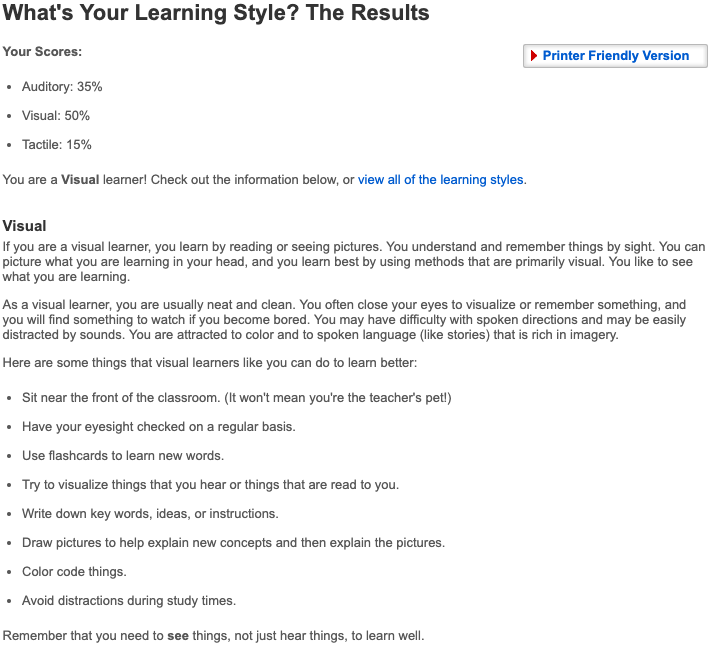
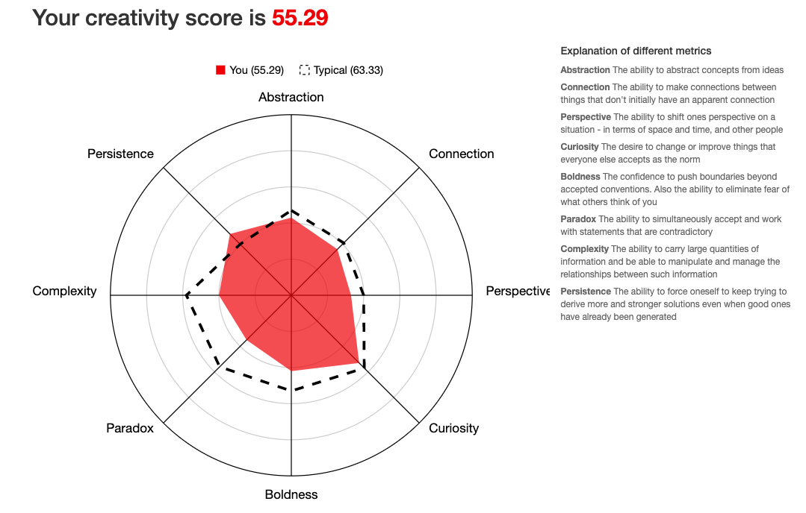
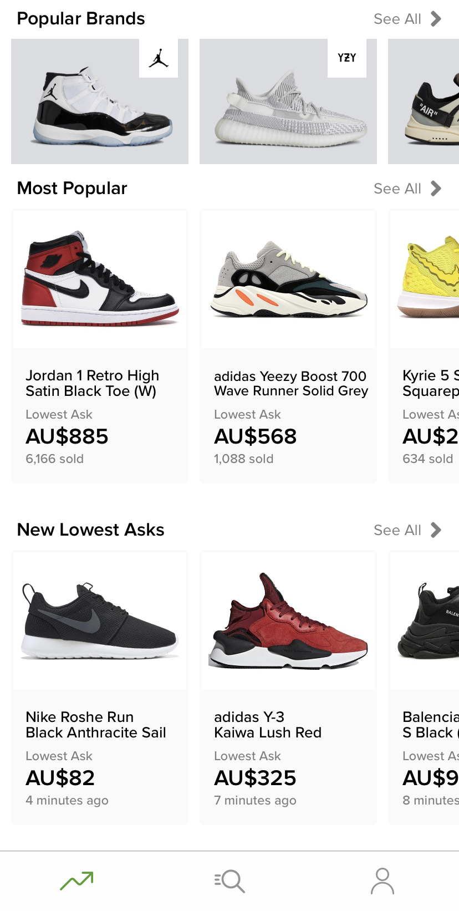
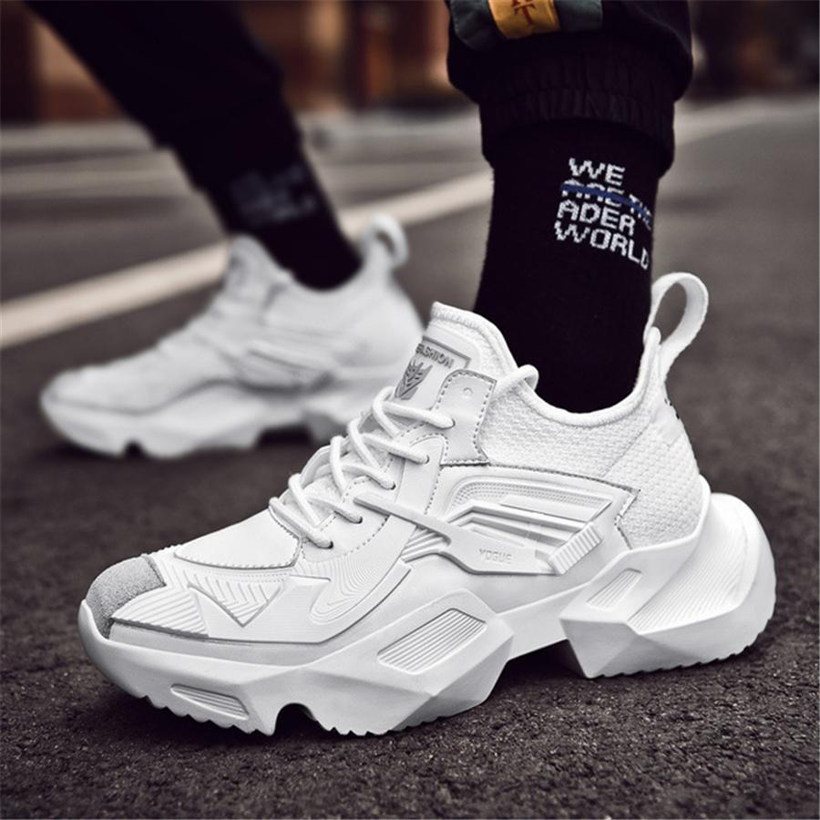

PERSONAL INFORMATION
self-portrait
Name: Yuliang Lei
Student No: s3704446
Email address: s3704446@student.rmit.edu.au
Nationality: China
Language to spoken: Mandarin
Education to date: Diploma of IT
Hobby: playing guitar, gaming
A RMIT student
self-portrait
Name: Yuliang Lei
Student No: s3704446
Email address: s3704446@student.rmit.edu.au
Nationality: China
Language to spoken: Mandarin
Education to date: Diploma of IT
Hobby: playing guitar, gaming
I love using mobile phone since I was a middle school student, and I was fascinated by special animation and practical functions in some applications. At that time, I considered whether I can design a mobile application by myself, and I began to like information technology.
RMIT
I choose RMIT as the school I learnt IT, since RMIT is a pretty good school which has a great education of IT, and it has modern technique and equipment to help us study. And the most important reason is that it’s near to our home.
I want to study programming of mobile applications, and use this knowledge to develop my own mobile application.
This job needs mobile app developers which have experience of ios development, HTML5 and API web service development. These requirements are exactly what I like. It’s no doubt that the job is to develop mobile applications to meet customer requirements. Also, this job provides an appropriate salary (around $110k average)
Required skills & experiences
Deep specialist knowledge of both android and ios development
Strong UI/UX knowledge
Strong web server knowledge
Business database knowledge
Excellent written and communication ability
Bachelor’s Degree in Computer Science, IT or related field
Minimum 6 years’ experience in a similar customer facing role
My current skill & experiences
A little Android development knowledge
Java beginner
Html5, css, javascript, php knowledge
A little database knowledge
Poor communication and written ability
Diploma degree of IT
No experience of any job
Plan
Learn what I need
Graduate and get bachelor’s degree of IT
Find some jobs which needs facing to customers, in order to increase ability of communication and writing
Myers-Briggs test
Learning style test
Creativity test
These results give me a detailed introduction of my character, learning style and creativity. Not only that, they also indicate my present situation, and give me a guidance what aspect I should make efforts in the future.
It will affect my division of work in the group, and my characteristic will support me to do some attentive but not use too much creativity works, such as arrange this project, and do color code things.
When I set up a team, I would invite members with different characteristics in order to let every member have their own strengths, so as to complete the project more efficiently. Besides, team members can learn from each other and make progress.
In this project, I want to develop a mobile application about sneaker consignment, which is what I want to do in IT. This application will break the restriction of physical stores or international sneaker-consignment apps when people need to buy sneaker, they can also buy them without going out.
This application will include many functions, such as user login, search bar, brand selecting and so on. Also, it will be designed a good user interface, since it aims to provide customers with a convenient environment.
This project is important to me since it’s the first application which made by myself. I can not only develop the skill and experience of mobile app development from this project, but also contribute to the future IT work, and it’s better to get my ideal job.
stockx, a American sneaker consignment application
Nowadays, with the rise of online-shopping, more and more people prefer shopping without physical stores. On the other hand, the number of international students increases rapidly(around 900k in 2018), they are fond of collecting sneakers in order to show their uniqueness, but there is a restriction that they can only buy rare sneakers(i.e. yeezy or Balenciaga) in the physical stores or international sneaker-consignment apps (stockx or goat, etc.).So there is a huge market of sneaker-consignment app in Australia. Under this background, the idea of developing a mobile application about sneaker-consignment has come up. This app will include popular brands, and customer can select shoes what they like at home.

International Student Enrolment 1994-2018
In this application, it will provide a good Visual design and user interaction. For example, I try to make navigation as simple as possible. I plan to use white color as background for the whole application, so that it contrasts with black words, make customers’ vision more comfortable.
a) Home page: this page will display the most popular sneakers
b) Product details: the details of product will be displayed in a individual page, which contains name, image, price, description, size and release date.
c) User login: users can sign up with username, password and email address. Users can change password through email, and if they forget or lose password, email is the best way to help them find password. We will notify sales promotions to users’ email if they would subscribe this application. This account will keep login until user press “Logout” button by themselves.
d) Search bar: if customers want to find sneakers they want, they can use search bar. It can not only search sneakers’ brand, but also shoes’ series.
e) Menu: Customers can choose one brand from different brands（Nike, Adidas, Jordan, puma, …） in menu, then they can choose to watch all sneakers of this brand, or continue to select one series. Another usage of menu is that customers can select sneakers by type, such as basketball, running, skateboarding and lifestyle. Also, this app categorizes shoes by gender and kids.
f) Filters: Filters is the most important function of filtrate shoes. This application will filtrate sneakers from brands, type, size, gender, release years and price，and customers can input price range. If customers do not like product display style, they can use another style by using Filters. This application will have two product display styles --- grid and list.
g) Sort: products can be sorted by many aspects: sales, price, release date. Customers can also choose them from high to low or low to high.
h) Shopping cart: if customers need to buy two or more products, they can add them into shopping cart at first, then they only pay once.
This application will support a variety of payments, products will post to customers’ home as long as they fill in their home address.
If products have any problem, or customers need to meet a consultation, contact information will be displayed in a contact page.
Security is an unavoidable aspect for developing a mobile app, it’s necessary to keep this project safety. For this application, we will use professional methods to make it away from disasters, such as back up.
sneakers
Tools: several 27.5-inch iMacs with 3.7GHz 6-Core i5 Processor, 16GB RAM and 1TB SSD (SSD has a faster transfer rate than HDD)
System: Mac OS, since it has a higher efficiency of programming and application developing, and its security level is higher than Windows OS. Another advantage is that it can use for longer time. Also, if developer restart computer, Mac OS can resume the previous process.
Software: Microsoft Office (for word processing and project management), Android Studio (Android application development software), Xcode (IOS application development software), SQL (database development software), CodeRunner (Operator Oriented Language development software)
Mac OS: It’s a basis of operating this computer
Microsoft Office: it’s the basic skill we need to learn, in order to deal with every word processing
Objective-C: this language is mainly used for ios application development
Java: this language is the basis for Android application development, and it is also use for ios application development
SQL: it’s a skill which uses for database management, it’s important for app developing, since it can store users’ information
Project management: it’s a skill which can carry out and manage a project effectively
Software security management: it’s a skill which can ensure software run safety, and reduce hazards effectively
If this project has finished, it will change the situation of the sneaker market currently. However, it will result in other competitor imitate this application, which will increase business competition. Therefore, this application needs updating and improvement continuously. For example, in terms of payment, we can add fingerprint payment and face recognition payment, which allows customers to pay in less time. And in the pages for product details, we will add price trend chart, which will make customers in charge of the value of sneakers. These updates and improvements will make it difficult for competitors to keep up with our pace.